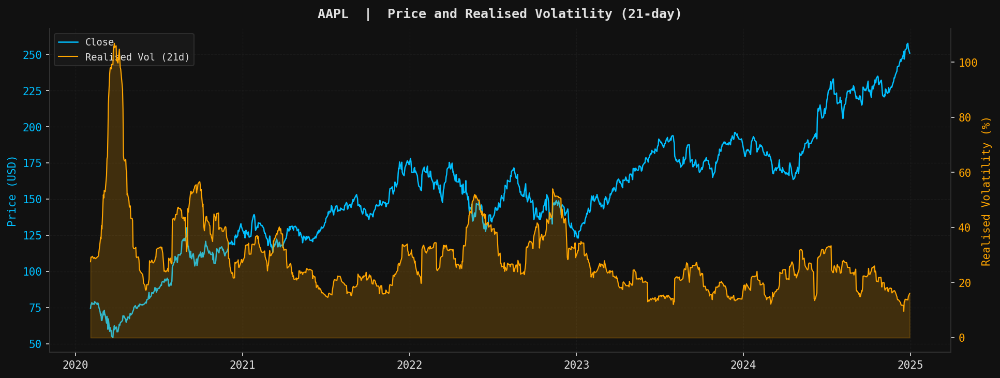
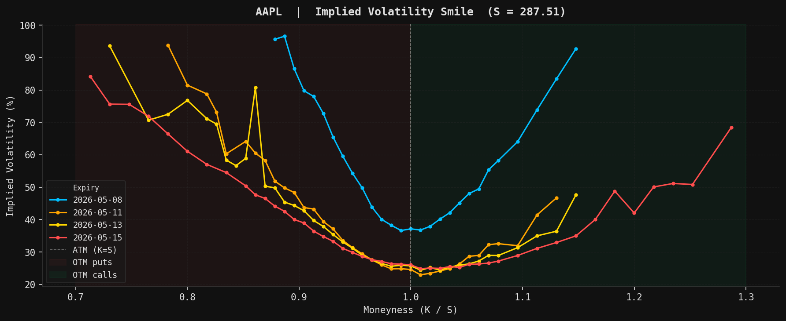
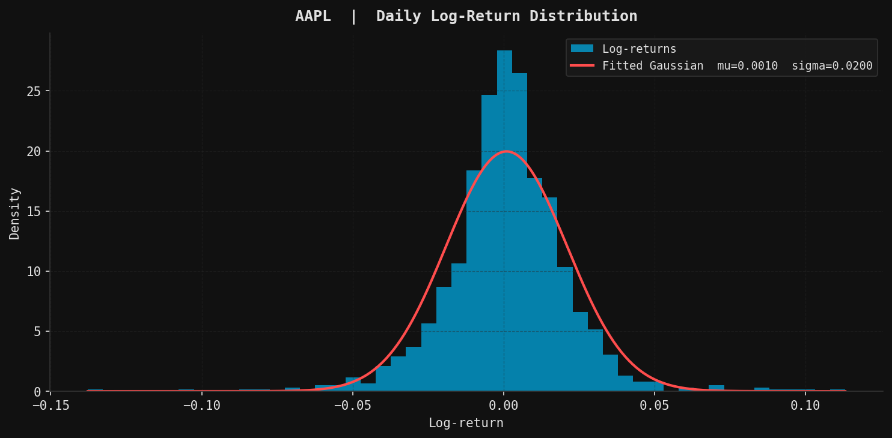
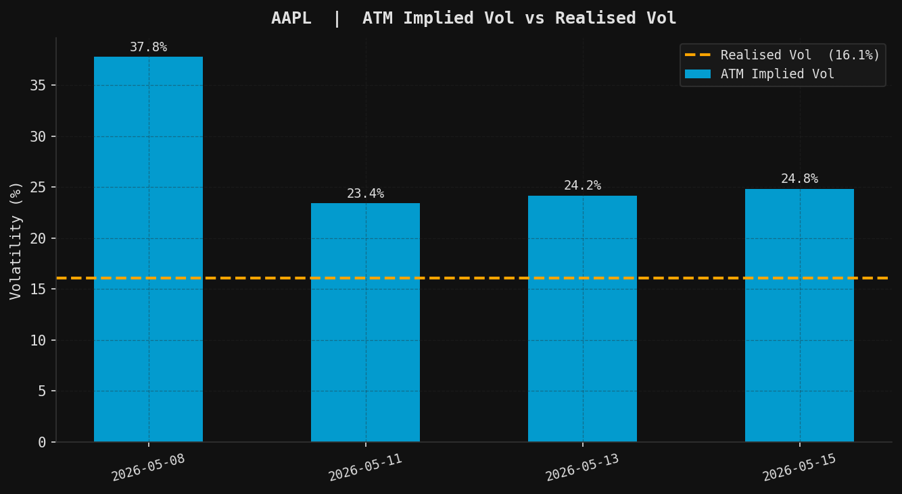

Market Data
Fetcher
A modular Python pipeline for pulling, cleaning and analysing market data via yfinance — historical OHLCV, live option chains, implied volatility extraction and visualisation.
Quantitative finance projects — pricers, hedging simulations, risk models — all share a common need: clean, structured market data. Yet sourcing and preparing that data is always the same tedious work: download from an API, handle errors, clean splits and NaNs, compute returns.
The goal is to build that layer once and build it right — a modular pipeline that works on any ticker supported by yfinance (stocks, ETFs, indices, crypto, forex) and outputs enriched DataFrames ready for downstream use, with no post-processing required.
Beyond historical data, the pipeline extends to live option chains: it fetches current market prices, inverts the Black-Scholes formula to extract implied volatility for each contract, and surfaces the volatility smile across strikes and maturities. This is the data foundation the BS pricer and the delta-hedging simulation both rely on.
Download
download_single() and download_multiple() — pull OHLCV data with auto_adjust=True (corrects for dividends and splits). Multi-ticker loop skips failing tickers gracefully. Handles MultiIndex columns that yfinance sometimes produces.
Clean
Four sequential steps: remove duplicate dates, remove invalid prices (zero or negative close), forward-fill missing values, then standardise column names to lowercase OHLCV. A single uncleaned NaN propagates downstream — this step is not optional.
Features
Computes log-returns $r_t = \log(S_t/S_{t-1})$, rolling realised volatility (21-day, annualised by $\sqrt{252}$), and cumulative returns. All features connect directly to the GBM / Black-Scholes framework used in the other projects.
Export
Saves one CSV per ticker to results/. Designed for direct consumption by backtesting engines, pricers, or ML pipelines — no post-processing required.
Option Chain
Fetches spot price $S$ and risk-free rate $r$ from the 13-week T-bill (^IRX). Downloads calls and puts across the 4 nearest maturities. Computes mid price from live bid/ask — falls back to lastPrice after hours when the spread is stale.
Implied Volatility
Inverts the Black-Scholes formula to recover $\sigma_{IV}$ via Brent’s method — guaranteed convergence on the monotone BS function. Tracks failures explicitly: 74% convergence rate on AAPL (309/416 contracts), with the rest discarded rather than silently included.
Export
Saves one CSV per ticker to results/. Designed for direct consumption by backtesting engines, pricers, or ML pipelines — no post-processing required.
Visualiser
Generates 4 charts automatically by combining both pipeline outputs — price & realised vol and return distribution (from OHLCV) · IV smile and ATM IV vs realised vol (from options). Each chart surfaces a distinct market phenomenon: the leverage effect, fat tails, the vol skew, and the variance risk premium.
| date | open | high | low | close | volume | log_return | realised_vol | cumulative_return |
|---|---|---|---|---|---|---|---|---|
| 2020-02-03 | 73.35 | 75.57 | 72.85 | 74.40 | 173 788 400 | −0.00275 | 0.2756 | 0.0277 |
| 2020-02-04 | 76.01 | 77.05 | 75.60 | 76.86 | 136 616 400 | +0.03248 | 0.2926 | 0.0616 |
| 2020-02-05 | 77.99 | 78.28 | 76.88 | 77.49 | 118 826 800 | +0.00812 | 0.2926 | 0.0703 |
| 2020-02-06 | 77.76 | 78.40 | 77.20 | 78.39 | 105 425 600 | +0.01163 | 0.2924 | 0.0828 |
| type | strike | expiry | mid | T | implied_vol | yf_implied_vol | volume |
|---|---|---|---|---|---|---|---|
| put | 260.00 | 2026-06-19 | 7.90 | 0.119 | 0.3062 | 0.3114 | 1 987 |
| put | 270.00 | 2026-05-15 | 4.15 | 0.019 | 0.2714 | 0.2689 | 7 103 |
| call | 280.00 | 2026-05-15 | 14.30 | 0.019 | 0.2381 | 0.2410 | 4 821 |
| call | 290.00 | 2026-06-19 | 11.80 | 0.119 | 0.2455 | 0.2502 | 2 340 |




SOURCE CODE
Full pipeline on GitHub — OHLCV download, option chains,
implied vol extraction, visualisation · 49 unit tests.